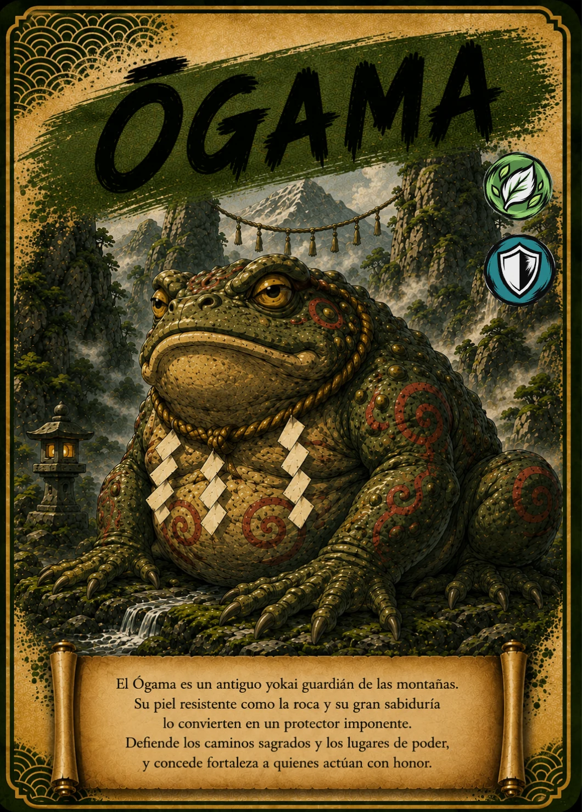

↗ Tocá la carta para verla en grande
EL ÁLBUM TAIKARDS · CARTA 28 / 48
ŌGAMA
El gran sapo de la montaña
- Naturaleza / elemento
- 🌿 Bosque
- Tipo
- 🛡 Defensa
📖 Te cuento mi historia
Tan grande y quieto que podría confundirse con una roca, Ōgama es un sapo extraordinario. Las historias de sapos gigantes forman parte del imaginario japonés. Esta carta lo convierte en un antiguo protector de las montañas, de piel resistente y mirada sabia. Su aventura nos invita a observar con atención: incluso el paisaje que parece inmóvil puede estar lleno de vida.
Versión infantil basada en la carta de TAIKARDS. Sus personajes y aventuras pueden ser diferentes de las leyendas tradicionales. La naturaleza y el tipo corresponden a la clasificación del juego.
← Volver a todas las cartas